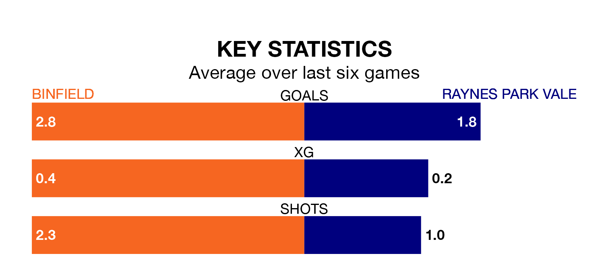

Struggling Binfield face Raynes Park Vale on Saturday looking to build on a win in their last league outing.
After securing all three points with a 4-1 victory over Corinthian-Casuals on Tuesday, Binfield sit 20th in the Isthmian League Division One South Central.
They travel to play a Vale side sixth in the standings, who were held in their last match, 1-1 against Hartley Wintney, on April 13.
With 49 goals in 36 games so far this season, Binfield are scoring at below the league average rate with 1.4 goals per game. And they are conceding more than average, letting in 103 goals at a rate of 2.9 per game.
Vale, meanwhile, are above average scorers, with 1.8 goals per game, compared to a league average of 1.6. They have conceded 1.2 goals per game.
The home side are in mixed form in the Isthmian League Division One South Central, with three wins and a draw from their last six games.
With four wins and two draws over that period, the visitors' form is better – they have taken 14 points from 18, compared to Binfield's 10.
Updated: 15:40 (UTC), 18/04/24